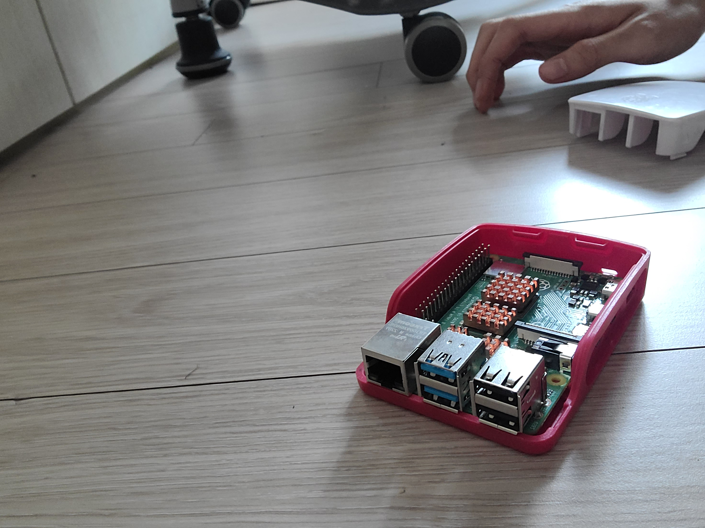

TeamRustNaS계기판
#=====Configuration======#
on_off_list = [0,0,0,0,0,0,0,0,0,0]
ip = 0
#========================#
klist = ["알칼리 건전지 인버터 기반 건전지 사용 다회용 보조배터리 준비", "알칼리 전지", "보조배터리 준비", "충전장치", "전원전류", "서버 디바이스 준비", "제어 가능한 Wi-Fi 준비", "랜선 (이더넷 캐이블) 연결", "포트포워딩", "RPI NaS 서버"]
value = ''
output = Element('output')
def p(x):
global value
value += x + '\n'
if ip:ip = 'http://'+'.'.join(ip)
else:ip = './404'
on_off_list = ['ON' if i else 'OFF' for i in on_off_list]
for i,j in zip(klist, on_off_list): p(f' {i} ••• {j}
')
p('
')
p(f' 서버 OS 페이지 접속하기
')
def go():
output.element.innerText = value
go()

RPI (Raspberry PI)는 라즈베리 파이 입니다.